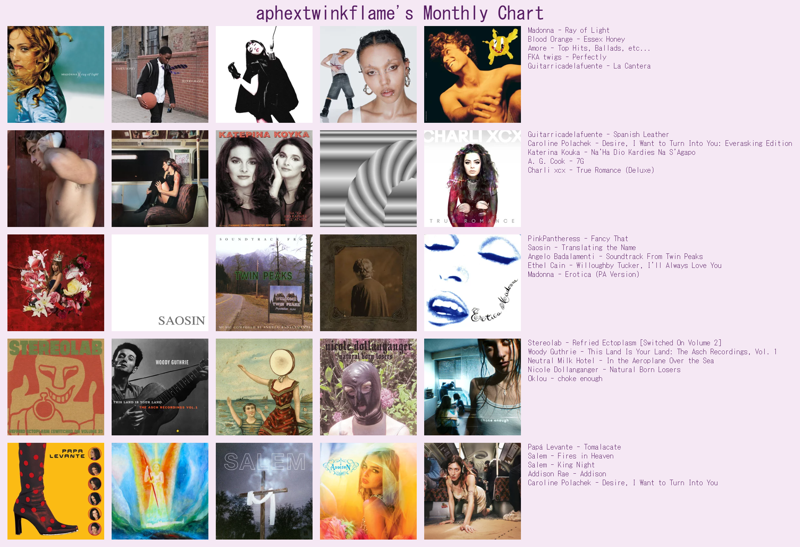

Music
As I have said on my about page, I enjoy listening to music as much as making it. You can check out my last.fm and soundcloud if you're interested. And check out my playlists!
Here's what I listened to last month!
My favorite albums/artists: